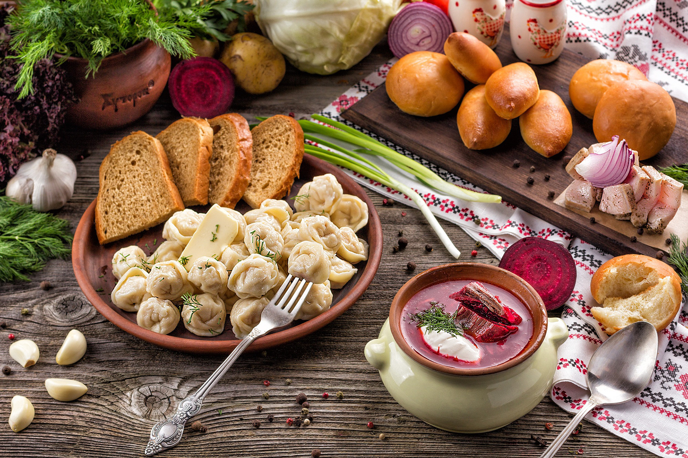

Русская кухня: наследие и вкусы
Русская кухня — это культурное наследие, наполненное разнообразными рецептами, которые отражают душу народа. Борщ, пельмени и блины — лишь малая часть богатства, которое передавалось из поколения в поколение. Каждое блюдо — это история, традиции и уникальный вкус.
Описание русской кухни
Русская кухня — это богатый калейдоскоп вкусов, ароматов и традиций, который формировался веками. Её основа — доступные, натуральные продукты и сытные блюда, которые наполняют энергией и согревают даже в суровый зимний день.
Среди основных ингредиентов — капуста, картофель, мясо, рыба, злаки и грибы. Простота приготовления гармонично сочетается с глубоким вкусом, а каждая трапеза превращается в уютный ритуал.
Одним из самых известных символов русской кухни является борщ — густой суп с насыщенным цветом и вкусом, благодаря свёкле, мясу и разнообразным овощам. Пельмени, которые называют "маленьким чудом", — это нежное тесто, скрывающее ароматную мясную начинку. А блины, тонкие как кружево, подаются с мёдом, сметаной или икрой, делая их неотъемлемой частью традиционных праздников, особенно Масленицы.
Русская кухня отражает не только природу страны, но и её культуру — блюда часто готовятся с душой, чтобы объединить людей за одним столом. Тепло домашней еды, щедро приправленное гостеприимством, делает эту кухню уникальной и незабываемой.
Что вы найдёте на сайте?
На этом сайте вы сможете подробнее узнать о пельменях, их истории и традициях приготовления, изучить рецепты классического борща, а также открыть секреты идеальных блинов, которые украсят любой стол. Каждый раздел наполнен интересными фактами и полезной информацией для любителей русской кухни.